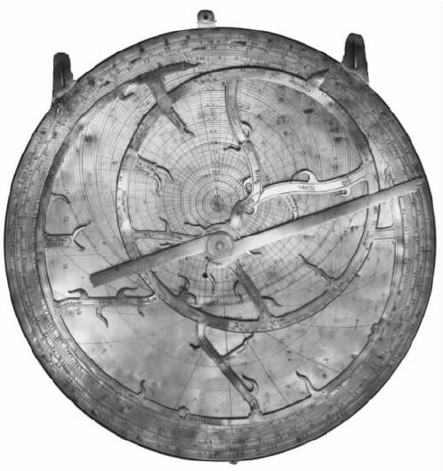
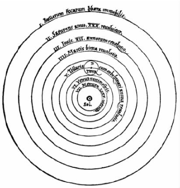

622年，先知穆罕默德迁出麦加到了麦地那，不久之后，新宗教伊斯兰教传遍了整个北非并传入了西班牙。伊斯兰教对天文学家的技能有特定的要求。每个月的起始是新月——不是当太阳、月球和地球排成一线时，而是在之后的两三天，当肉眼能看到蛾眉月的时候。可以使相邻的村庄都同意这个时候是新的一月的开始吗（即使天空云层密布）？祈祷的时刻是按照太阳穿越天空时的地平高度而定的，因而正确定出这些时刻的需求最后导致了“穆瓦奇特”（清真寺“授时者”）官署的设立，给了天文学家一个稳定且受人尊敬的社会地位。当地的麦加方向即“奇布拉”的确定支配着清真寺和墓地以及其他诸多事务的形制，提出了一个具有挑战性的问题，这个问题正是“穆瓦奇特”和天文学家想要解决的。
在伊斯兰教传入很久以前，亚历山大在动荡年代就已不再是伟大的学习中心。《天文学大成》进入了君士坦丁堡，9世纪时，来自巴格达的使者购买了一个抄本，使巴格达年轻而活跃的穆斯林文化认识到了以希腊语留传下来的知识宝库的重要价值。在巴格达，智慧宫的一个小组作了翻译，先从希腊文本译成叙利亚文，再从叙利亚文译成阿拉伯文。君士坦丁堡的其他抄本则被尘封而无人阅读，直到12世纪，皇帝将一个抄本作为礼物送给了西西里国王，并在那里被译成拉丁文。
占星术尽管在《古兰经》中受到批判，但仍然盛行于穆斯林世界的每一个社会阶层。那些并非仅仅是算命人的占星家将他们的预言建立在行星位置表之上。《天文学大成》模型的成功是无可争辩的，但这些模型所结合的参数在几个世纪后却被日益精确地确定出来——托勒密本人就曾说明过该怎样确定。最初，天文学家为此目的所用的天文仪器并不大，但是，随着观测者抱负的增大，观测仪器的尺寸也变大了，而且观测者指望赞助人来支付建造费用，并为他们提供住处。
但是，有时这会招致宗教权威的敌意，而一个赞助人的死亡——或者甚至是他勇气的丧失——也会引发天文观测的终止。在开罗，维齐尔 [1] 命令于1120年开始建造一座天文台，但是到了1125年，他的继任者却被哈里发下令杀死，他的罪名包括“与土星交往”，于是，天文台被拆毁。在伊斯坦布尔，土耳其苏丹穆拉德三世在1577年为天文学家塔奇丁建成了一座天文台——其时正值一颗亮彗星出现。塔奇丁无疑是为了自己的发达而将这一天象解释为苏丹和波斯人作战的吉兆，但是实际情况却正好相反。1580年，宗教领袖使苏丹相信，窥探自然的秘密会招致不幸。苏丹于是下令将天文台“从远地点到近地点”彻底摧毁。
只有两座伊斯兰天文台存在的时间稍长一些。第一座在马拉盖，即今天的伊朗北部。这是波斯的蒙古统治者旭烈兀为杰出的波斯天文学家图西（1201—1274）在1259年开始建造的。它的仪器包括一座半径为14英尺的墙象限仪（一种固定在正南北方向的墙上，用于测量地平高度的仪器）和一座环半径为5英尺的浑仪（用于其他的位置测量）。借助于这些仪器，一组天文学家在1271年完成了一部《积尺》 [2] ，即根据托勒密的《便捷表》传统而编制的天文表集，包括对使用方法的说明。但1274年，图西离开了马拉盖前往巴格达。虽然天文台的观测一直持续到下一个世纪，但是它的创造性时期却已经结束。
另一座主要的伊斯兰天文台受益于王子本人就是天文台的一位热心成员。在中亚的撒马尔罕，乌鲁伯格（1394—1449）在1447年继承王位之前就是一个行省的统治者，他于1420年开始建造一座3层的天文台，其主要仪器是按照“越大越好”的原则制造的一架半径不下于130英尺的六分仪。该仪器被装在户外两堵南北方向的大理石墙上，仪器的活动范围经过调节可以用来观测太阳、月球和五大行星的中天。撒马尔罕天文台的伟大成就是一套天文用表，其中包括一张有一千多颗星的恒星表。更早以前，巴格达天文学家苏菲（903—986）曾修正了托勒密的星表，他给出了改进过的星等和阿拉伯文的称谓，但是恒星本身和它们常常不正确的相对位置却没有得到修订。所以乌鲁伯格的星表堪称是中世纪唯一重要的星表。撒马尔罕天文台在乌鲁伯格于1449年被谋杀后很快就被废弃了。
天文台是为杰出人物建造的，但是每一位星相学家也需要作观测，这在研制出星盘以后成为可能。星盘是源于古代的一个精巧的便携式计算装置和观测仪器。典型的星盘由一个黄铜圆面构成，通过位于顶端边缘的一个圆环可以被悬挂起来。星盘的一面可用来观测恒星或行星的地平高度，观测者将仪器悬挂起来并沿着一根瞄准杆观测天体，然后沿着圆周在刻度盘上读出该天体的地平高度。圆盘的另一面代表从天球南极投影到天球赤道面上的天球。
发自天球南极的每一根线与天球相交于一点，并且与赤道平面相交（于一个唯一的点），后者是前者的投影。因为黄铜盘面的尺度是有限的，又因为当时的星相学家对于南回归线以南的星空没有实际兴趣，故而投影的天空从天球北极（以圆盘中心来代表）一直延伸到南回归线为止，不再向南。

图10 在牛津大学莫顿学院保存的一个14世纪的星盘。
在观测者纬度处的等高度圈投影成的圆，和很多别的东西一起，被蚀刻在盘面上。到目前为止，一切都好，但是转动天空的恒星也需要显示。这可以通过一个黄铜薄片来完成，它指示出主要恒星的位置，并且尽可能多地挖去其余部分，从而使得下面的坐标圈露出来。这个黄铜薄片绕着下面一个圆盘的中心转动，就像恒星绕着北天极转动那样，它也能显示出太阳的黄道轨迹，观测者需要知道（并且标出）太阳在黄道轨迹上面的现时位置。
这样一来，在一次观测中——典型的观测包括在夜间一颗恒星的地平高度观测或在白天太阳的地平高度观测——观测者可以将该黄铜薄片转动到它正确的现时位置，亦即移动它直至恒星（或太阳）位于适当的坐标圈之上。至此，整个天球现在就到位了，而且许多问题可以获得解答——例如，哪些恒星现在正处于地平线上方以及每颗恒星的地平高度是多少。将太阳和圆盘周边上的刻度连成一线并在标尺上读出钟点，即可确定时间。在确定黄铜薄片的位置以后，无论观测的是恒星还是太阳，星盘总是像钟一样，能够日夜24小时告知时间。
我们能够从星盘容易地获取大量的其他信息。例如，确定一颗恒星升起的时间。天文学家可以转动黄铜薄片直至该恒星位于零地平高度圈之上，然后读出时间就行了。星盘是一个简单、精巧而又多用途的设计，它促进了天空的定量观测。
早在9世纪的上半叶，巴格达智慧宫的花剌子米［al-Khwarizmi，此人名字的讹误拼法给了我们“算法”（algorithm）这个词］就编制了一部《积尺》。它使用了桑斯克里特天文著作中所包含的参数以及计算过程。770年左右，桑斯克里特的这本著作就被带到了巴格达。《积尺》于12世纪被译成拉丁文，从而变成了印度天文学方法运抵西方的载体。《积尺》使得对未来行星位置的预报成为可能，从事职业活动的天文学家或星相学家也应运而生，于是这类星表大量产生了，并且其中常常用到改进了的托勒密参数。
伊斯兰世界没有在基督教西方出现的大学的对应物，我们试图寻找一位有创意的挑战亚里士多德或托勒密地心宇宙基础的伊斯兰思想家，但却一无所获。在10世纪，经常出现怀疑托勒密的讨论。受攻击最多的是托勒密的对点，它违反了匀速圆周运动这个基本原理。但是本轮和偏心也遭到了批评，因为有关的运动虽然是匀速的，但却不再以地球为中心。这方面的一个纯粹主义者是安达卢西亚人拉什德（1126—1198），他在拉丁世界为人熟知的名字是Averroes，在西方，亚里士多德被称为“哲学家”，而Averroes则为“评注者”。他承认托勒密模型“拯救了表象”——再现了观测到的行星运动，但是这并不意味着模型就是真实。他的同事安达卢西亚人比特鲁基（他的拉丁名字是Alpetragius）尝试设计了替代模型，以满足亚里士多德学派的需要，但其结果当然令人很不满意。
在开罗，哈桑（965——约1040）试图修改托勒密模型，使得它们具有物理实在性的特征。在他的《论世界的构造》一书中，天空由同心的球壳壳层构成，在各层的最厚处，则有更小的球壳和球。在13世纪，他的著作被译成了拉丁文，并成为在15世纪影响乔治·普尔巴赫的著作之一。
甚至在最具实用观念的天文学家中间，对点也早已引起了疑虑。13世纪，马拉盖的图西成功设计了一种含有两个小本轮的几何替代物；出于同样的原因，哥白尼在他生涯的某个阶段也采用了一种相似的设计。不过历史学家还没有发现他们之间有明显的联系。14世纪中叶，大马士革倭马亚清真寺的“穆瓦奇特”伊本·舍德尝试设计了行星模型，剔除了所有引起异议的元素。他的月球运动模型避免了《天文学大成》中月亮视直径的巨大变化，他的太阳运动模型基于对太阳的新的观测，他的全部模型不仅摆脱了对点，而且也摆脱了偏心圆。但是他发现，由于我们能够很好地理解的理由，本轮是不可避免的。不过在舍德的时代，拉丁世界就已经发展起了它自己的天文学传统，从而不再依赖阿拉伯文的翻译。
这种独立是缓慢形成的，在罗马世界，没有一种主要的古天文著作是用拉丁文撰写的，希腊语仍然是学者的语言。随着罗马帝国的崩溃，希腊的知识在西方几乎全部消失，于是人们不再阅读古天文学的经典——即使是可以获得的。罗马哥特王国的高官博埃修斯（约480—524/5）着手将柏拉图和亚里士多德的论著尽可能多地译成拉丁文，但是为时已经太晚。不过不管怎样，在因一桩不公正而反抗国王从而被处死以前，博埃修斯设法翻译了许多希腊语著作，其中有几种是逻辑学著作。他将这些著作和西塞罗这样的罗马作者的逻辑学著述放在一起，从而留赠给后世一套文集，这套文集成为长期研究的一个领域，中世纪的学生可以在书中进行“比较和对照”并且得出自己的结论。结果，逻辑学上的相容性成为了中世纪大学里的一大议题。关于本轮的真实性以及行星模型能否在根本上达到确定性的辩论，成为了人文学科青年学生们的兴趣所在。
在这段时期里，柏拉图只有一部（不完整的）著作被译成拉丁文：宇宙学神话《蒂迈欧篇》。卡西迪乌斯（4世纪或5世纪）翻译了该书的2/3，还写了一段冗长的评注。虽然地球为球形这个基本事实从来没有被忽视，但在中世纪早期用拉丁文写成的天文学著作读起来简直是糟透了。生活于5世纪早期的非洲人马克罗比乌斯为西塞罗的《西庇阿之梦》写了一个评注，在其中他阐述了一种宇宙学理论。在这个理论中，球形的地球位于布满恒星的天球的中心，该天球带动着行星每天自东向西地转动着，每颗行星也有着相反方向的自转，因为马克罗比乌斯的材料来源不一样，所以他对于行星序列的表述很模糊。迦太基人马丁纳斯·卡佩拉（约365—440）写了《哲学和墨丘利的婚礼》，这部著作是一个关于天堂婚礼的预言，在婚礼上，7个女傧相都献出了一门人文科学的纲要。这段描述对于解释以下问题很重要：为什么金星和水星总是出现在太阳的附近？其天文学解释是：它们绕太阳旋转，所以当太阳围绕地球旋转时，它们伴随着太阳。
像伊斯兰教那样，基督教也对天文学家提出了挑战，其中主要的挑战是计算复活节的日期。简而言之，复活节是春分第二个满日之后的那个星期天。这样，它在任一年的日期就同时依赖于太阳和月球的周期。作为巴比伦人传下来的月和年精确值的继承者，亚历山大的基督教徒可能提前若干年就已算出了复活节的合适日期，但是教会的权威人士则采取了更为实用的方法，尝试着找出一个由许多年构成的期限，它几乎和一个月的整数倍相等，并可设定未来年份中复活节的日期。这个日期一旦确定，这样一个序列就可以在未来的周期中年复一年地重复。
最后采用的周期是由巴比伦天文学家在公元前5世纪发现的，但却归功于希腊人默冬了，这一周期的依据是235个朔望月等于19年（误差只有两个小时）。725年，英格兰贾罗的“可敬者”比德（672/673—735）写出了一篇关键性的论文《论时间的划分》。在恺撒制定的儒略历中，每4年就有1个闰年（无一例外），所以每4年，一个给定日的周日总是超前5天，从而在7×4=28年后，周日将回到原先的日期。比德将这与19年的默冬周期结合在一起，算出一个总的周期19×28=532年，既迎合了复活节与日和月的配合关系，又满足了复活节要在星期日的需要。
天文学以及占星术在拉丁世界的复兴是在第一个千年的末期开始的。当时星盘从信仰伊斯兰教的西班牙传入了西方。在那些日子里，占星术有一个合理的基础：植根于微观宇宙——单个生命体——和宏观宇宙之间的亚里士多德哲学类比。医科学生学会了怎样追踪行星，这样他们就知道什么时候有利于治疗病人的相应器官了。
1085年，伟大的穆斯林中心托莱多陷入了基督教徒之手，伊斯兰的知识宝库，特别是希腊文变得可以理解了。翻译家移居到西班牙，最著名的是克雷莫纳的杰拉尔德（约1114—1187），他数不清的译作中包括有《天文学大成》和撒迦里的《托莱多天文表》（1100）。这些表经修改后被其他地方所采用，事实证明它们很好用，虽然构成其基础的行星模型暂时还是个谜。
如果说12世纪是翻译的时代，那么13世纪就是译作被吸收的时代。在涌现的大学里，拉丁语是法兰西式语言，所以没有语言上的障碍阻止学生和教师去他们想去的地方。未来的律师可能到博洛尼亚，医科学生可能到博杜瓦，而对大多数学科来说，巴黎是个理想的去处。
在那里，像在别的地方一样，人文学科学院通过人文学科的7门课程（其中包括天文学）提供文学和计算方面的基本教育。人文学科的学生大多为十多岁的男孩子，而印刷术还未发明，所以讲授的水平不可避免地只是初等的。少数学生最后会留在更高级的学院，从事神学、医学或法律研究。医学和法律享有传统声誉，奥古斯丁和教会其他神父的著作确保了神学是门有前途的学科。所以，在更高级的学院教师和陷入人文学科单调常规的教师之间存在着一种紧张的关系。
大多数新的译作属于人文学科，阅读这些译作为巴黎的文学硕士提供了一种提高地位的途径。同时，亚里士多德文集的传播对于基督教《启示录》并无贡献，甚至似乎还挑战了某些基本的基督教教义，在神学家之中引起了疑虑和不安。紧接着是巴黎的十年混乱，直至多明我教会的修士托马斯·阿奎那（1225—1274）完成了综合，成功地将亚里士多德吸收到基督教教义之中，以至于17世纪的人们发现很难将两者分开。
研究并不是那时候大学的任务，在天文学中最要紧的教学需要是一本青年学生可以用的初等教科书。13世纪中叶，霍利伍德的约翰——他的拉丁名字是Johannis de Sacrobosco——在这方面作了尝试，但是他的《天球》在解释太阳、月球和行星的运动时遇到了挑战，故而并不合适。尽管如此，在印刷术发明之后，这本著作还是为更有能力的天文学家提供了一个借口，去写出详尽的评注，并且就以这种形式成为了所有时代的畅销书之一。
在13世纪后期有个匿名的作者对《天球》连同他自己的《行星理论》的某些缺点作了校正。这给了各式各样行星的托勒密模型一个简单的（即使并不令人十分满意的）说明以及清晰的定义。同时，在卡斯提尔国王阿尔方索十世的宫廷，旧的《托莱多天文表》被《阿尔方索星表》所替代。现代计算机分析表明，这些在以后300年中被视为标准的星表是依据托勒密模型计算的，只是略有参数更新而已。
到14世纪，西方拉丁世界在充分掌握了过去的传统后，有了新的突破。对天文学来说，一个有意义的发展来自地球物理学。通过讨论抛体运动，亚里士多德曾经令人信服地论证了地球是静止的：垂直射出的箭会落回地面，正好是射手放箭的位置，这证明在箭飞行时，地球并没有运动。
但是，在讨论抛体运动时，亚里士多德并不能令人信服。他论证道，像一支箭那样的地球上的一个物体将会自然地向着地心运动，而其向上的（因而是非自然的）运动必定是由一个外部的力施加其上造成的——并且不只是施加其上。只要箭还在上升，这个力就一直存在。亚里士多德认为空气本身是维持箭向上运动的唯一动因，但是怀疑论者指出这是似是而非的，因为箭有可能会不顾大风而向上射去。
巴黎的大师让·布里丹（约1295—约1358）和尼古拉·奥莱斯姆（约1320—1382）同意亚里士多德关于必有外力作用的观点，但是他们反对将空气视作一种外力。他们表示，弓箭手必将一种“无形的动力”施加在箭上，他们称之为“冲力”。布里丹认为天球——它们虽然没有摩擦力，但是要永远地自转下去则需要有个持久的动力（天使的智力？）——只要在创世时被赋予促成运动的冲力，就会永恒地旋转下去。
奥莱斯姆明白冲力概念的重要含义，如果 地球的确是自转的，那么站在地球表面上的弓箭手会和地球一起运动。结果，当他准备射出箭时，会不知不觉地向箭施加侧向冲力。在这个冲力的作用下，飞行中的箭会水平地移动，也会垂直地移动，保持与地球同步，从而正好回落到它射出的地方。他说，因此箭的飞行对于地球是否静止的争论起不了作用。其他援引的传统论证，包括出自基督教《圣经》的引文，也证明不了什么。奥莱斯姆的见解是：地球的确是静止的；但这也不过是个见解而已。
15世纪印刷术的发明有许多影响，最重要的是促进了数学学科的发展。所有抄写员都是人，在准备一个原稿的副本时都会犯偶然的错误。这些错误常常会传递给副本的副本。但若著作是文字作品，后来的抄写员注意到了文本的意义，他们就有可能识别和改正他们的同行新引入的许多差错。但是那些需要复制含有大量数学符号文本的抄写员难得运用这样的控制手段。结果，撰写数学或天文学论文的中世纪学生会面临巨大的挑战，因为他只有一个手稿的副本可用，而该副本不可避免地在传抄中会有讹误。
在引入印刷术之后，所有这些都改变了。现在作者或译者能够核对校样，从而确保排好字的文本忠实反映出了他的意图；然后印刷机能够印出许多完美的副本，用来分发到整个欧洲并且出售。与手抄本的费用比起来，印刷本的价格也更为适中。
在几十年内，希腊天文学家的成就就已经被掌握并且还被超越了。奥地利宫廷星相学家乔治·普尔巴赫（1423—1461）的《行星新理论》于1474年付印，它描述了支撑《阿尔方索星表》的托勒密模型和这些模型的真实物理表现，也许就是这些表现的不足激发了哥白尼去从事天文学的研究。
1460年，普尔巴赫和他的年轻合作者柯尼斯堡［拉丁文为Regiomontanus（雷纪奥蒙塔努斯）］的约翰尼斯·穆勒（1436— 1476）遇到了尊贵的君士坦丁堡的红衣主教约翰尼斯·贝萨瑞恩（约1395—1472）。贝萨瑞恩渴望看到《天文学大成》的内容更易理解，他说服了这两位天文学家着手完成这一任务，普尔巴赫在次年即告离世，但雷纪奥蒙塔努斯 [3] 完成了这一任务。他们的《天文学大成梗概》篇幅只有原著的一半，于1496年以印刷本面世。它至今仍是托勒密名著的最佳简介之一，至于《天文学大成》本身则于1515年以过时的拉丁文译本问世，1528年出版了新的译本，1538年出版了希腊原文版。到了1543年，一本胜过它的书出现了。
尼古拉斯·哥白尼（1473—1543）出生于波兰的托伦，就读于克拉科夫大学，在那里天文学教授从不隐瞒他们对于对点概念的不满。然后他去了意大利，并在那里学习教会法规和医学，同时也学习希腊语并发展他在天文学方面的兴趣。据说，1500年左右，他曾对大批听众作过天文学讲座。1503年，他回到了波兰从事弗龙堡大教堂的行政管理，他的舅舅是那里的主教。他的余生就待在这个主教管区。
中世纪晚期，亚里士多德卷帙浩繁的著作在拉丁世界是可以读到的，但柏拉图的境遇就不怎么好了：只有两篇不重要的对话添加进卡西迪乌斯很久以前曾作部分翻译的《蒂迈欧篇》里。这些状况在文艺复兴时期改变了，因为此时恢复了与希腊世界的密切接触，在君士坦丁堡1453年陷落之前不少希腊学者涌入西方。柏拉图的对话被发现并以其文学价值而备受赞赏，而且他对宇宙的数学方面的观点开始取代自然主义者亚里士多德的宇宙理论。天文学家开始寻找行星理论中的和谐和匀称。但是他们没有在托勒密模型那里找到，即使《阿尔方索星表》仍能以合理的精度满足需要。他们对对点理论尤为不满，用哥白尼的追随者乔治·约阿希姆·赖蒂库斯（1514—1574）的话来说，对点理论是“自然所憎恶之事”。
托勒密的《行星假设》连同他总的宇宙论现在也已失传。《天文学大成》提供的是单颗行星的模型，但是托勒密明显没能呈现出一幅宇宙的整体图像。正如哥白尼所写的那样，这意味着过去的天文学家未能发现或推断出所有的要点——宇宙的结构和它各部分的真正对称。但是他们，正如有些人那样，从不同的地方取来了手、足、头和其他肢体，描绘得的确很好，但造型不取自同一身体，相互之间也不匹配——故而这样的部件组合起来，与其说是个人，倒不如说是个怪物。
正是基于这些美学上的考虑以及托勒密模型月球视直径的荒谬变化之类的许多特殊问题，改革的压力产生了——即使托勒密模型（连同改进了的参数）已足够合理。
改革的方向有迹可寻。亚里士多德的习惯是引述他打算予以反驳的那些人的话，这意味着每个学生都得了解那些曾主张过地球是运动的这一观点的古代作者——亚里士多德的反驳已经不再令人信服。普尔巴赫曾评述过，由于未知的某种原因，在每一个单颗行星的模型中如何会产生一个年周期。无论是什么驱动了哥白尼的思想，在他返回意大利没有多少年之后，一本由他撰写的题为《要释》的手稿开始流行。在其中他简述了他对现存行星模型的不满，对于对点理论更是有专门的批评。他提出了一个以太阳为中心的替代方案，其中地球变成了一颗周期为一年的围绕太阳转动的行星，而月球则失去了行星的地位，成为地球的一颗卫星。
他指出这将如何为行星（现在的数目为6个）排列一个明显的序列（按周期和距离）。我们知道托勒密如何似是而非地假定，运动最慢的行星是天空中最高的；但这没有确定太阳、水星和金星间的序列，当它们相对于恒星运动时，它们结伴而行，所以看起来周期同为一年。一旦这个周期被认为是地面观测者的实际观测周期，就能找出水星和金星的真正周期，这两个周期非常不同，也和地球的周期不同，因而可以由此建立一个明确的周期序列。
哥白尼也能用地球与太阳距离的倍数来度量行星轨道的半径：例如当金星看起来距离太阳最远时（位于“最大距”），地球——金星——太阳构成一个直角，通过测量金星——地球——太阳间构成的角度，观测者能够画出这个三角形的形状从而得到其边长之比。周期序列和距离序列被证明是统一的。他后来说到了这一点：
在那个时代，人们都是在像托勒密那样寻找宇宙中的和谐，因此以上的观点是一个有力的观点。同时，哥白尼在《要释》中更为详细地率先发展了行星和月球的无对点模型。
岁月流逝，其间哥白尼在远离欧洲知识中心的地方发展着他的数学天文学。1539年，当时还是维滕贝格大学的一名数学教授的赖蒂库斯拜访了他。赖蒂库斯发觉他自己已被哥白尼的成就迷住了。哥白尼发展了行星运动的几何模型，足可匹敌《天文学大成》中的模型，但是它们被融入了一套完整的日心宇宙观中。他获得了哥白尼的许可，于次年发表了该著作的《简报》。他还说服哥白尼允许他将著作的完成稿［以简化的拉丁文书名De revolutionibus（《天体运行论》）为大众所知］带到纽伦堡付印，并委派了路德派教士安德烈亚斯·奥西安德（1498—1552）照看印刷事务。出于好意，教士插入了一篇未经授权和不加署名的序言，提出这里太阳的运动只是一种方便的计算手段。结果那些只看序言的读者就对作者的真实意图一无所知。
哥白尼的书大量涉及行星轨道的（无对点）几何模型，而且以其使人气馁的复杂性让这些模型与《天文学大成》的模型相匹敌。后来人们才证明了它们能够成为精确行星表的基础——证实日心体系能够通过实践检验的伊拉斯谟·莱因霍尔德（1511—1553）的《普鲁士星表》于1551年出版，该星表正是用哥白尼的模型计算的。在《天体运行论》的第一卷中，哥白尼概述了突出的结果，那些结果都是依据地球是一颗围绕太阳旋转的普通行星这一基本假设取得的。
我们已经看到，按周期排序的行星表与按距离排序的行星表是相同的。同样显著的是行星的神秘“流浪”（行星由此得名）变成了从另一颗行星观测一颗行星的明显而可期的结果：当火星在天空中位于冲日方向时，看起来火星在退行，仅仅是因为那时地球从“内侧”赶上了它，至于为什么水星和金星这两颗行星总是在靠近太阳时可见，而其余3颗则在子夜时可以观测到，也不再有任何神秘之处了：水星和金星的轨道在地球轨道的内侧，而其余行星的轨道则位于地球轨道的外侧。
确实，作为唯一具有一颗卫星的行星，地球是反常的。“固定的”恒星确实也没有显现出周年视运动。如果从处于周年轨道的地球上观测，它们本应该有的（哥白尼反驳说，恒星在遥远的地方，所以它们的“周年视差”很小，以至于观测者不能观测到）。但是这些是细节。日心宇宙是一个真实的宇宙：

图11 太阳系略图，取自哥白尼《天体运行论》第一卷。图中显示了各颗行星和它们的近似周期。注意第五颗是地球，是唯一带有一颗卫星（月球）的（哥白尼曾因这一异常而感到疑惑）。伽利略后来用望远镜发现木星也有卫星。
希腊人曾试图对神秘行星“拯救表象”，《天体运行论》利用匀速转动的圆的组合这种几何模型将这样的尝试推向了极致。虽然《天体运行论》每个部分都和《天文学大成》一样复杂，但它是去掉了对点的《天文学大成》。几十年之后其革命性意义开始彰显。